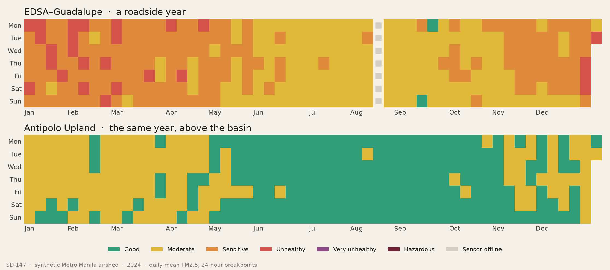
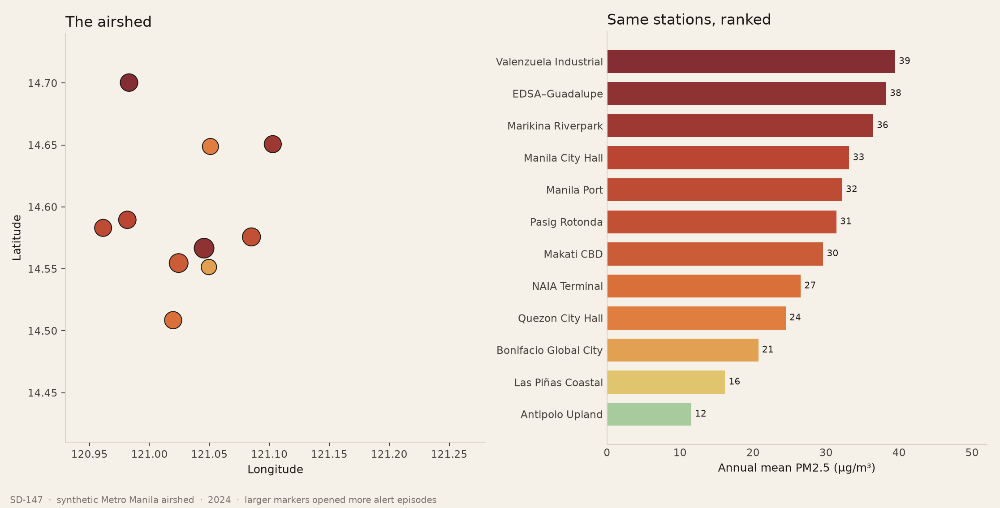
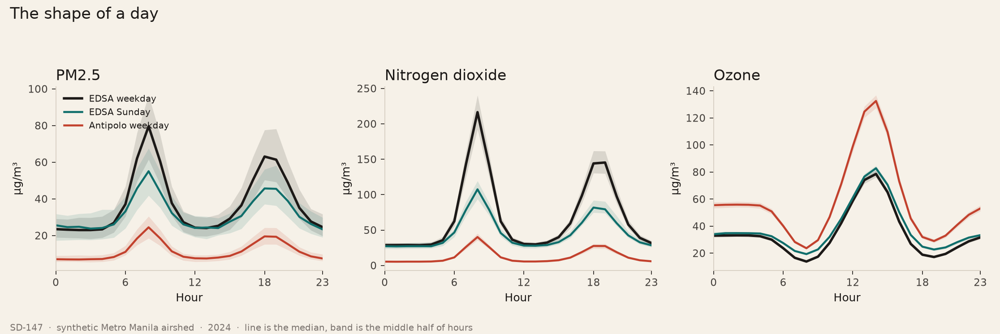
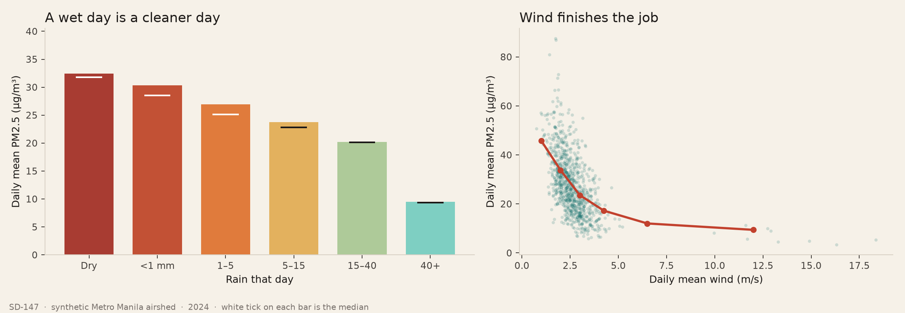
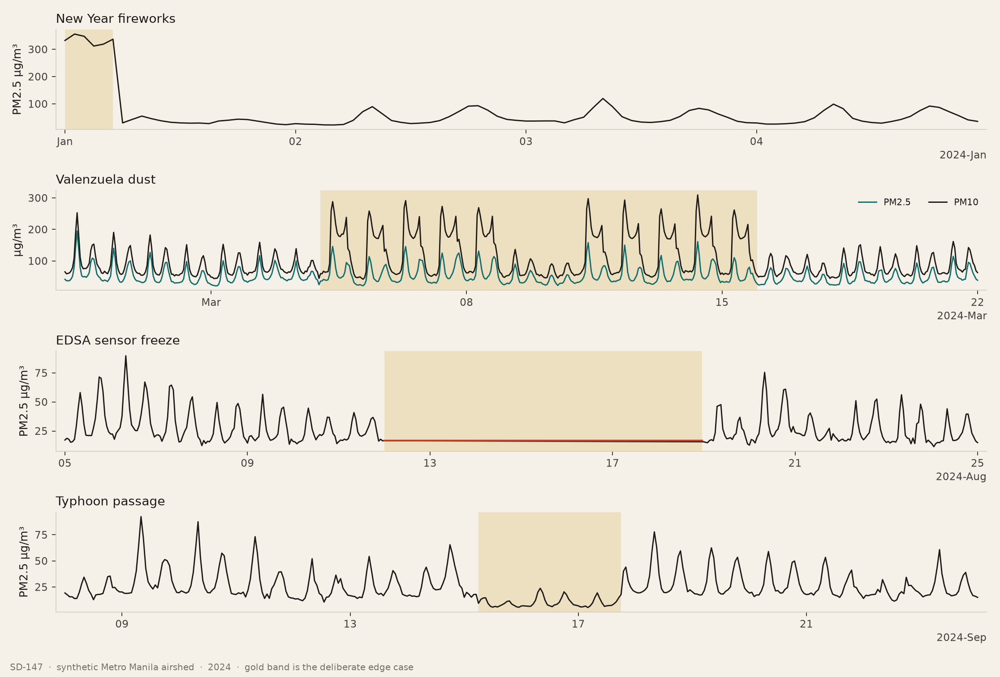

Eskwelabs EIF · Synthetic dataset · SD-147
A year of
Metro Manila air.
Twelve stations, every hour of 2024, generated so a bad day, a clean ridge, and a broken sensor are obvious before anyone opens a table.
Good
Moderate
Sensitive
Unhealthy
Very unhealthy
Hazardous
Sensor offline
632,448hourly readings
749alert episodes
147the seed that rebuilds every row
Synthetic Metro Manila Airshed. Not a DENR-EMB observation, and not a regulatory AQI. Aasen · Eskwelabs EIF fellowship.
SD-147 · Urban air quality
The assignment
A dashboard has to know which bad hour is real.
SD-147 is a difficulty-1 synthetic dataset for an urban-services analyst. The job is to decide where the air is bad, when it is bad, and which hours should not be trusted. The pictures are the point. The tables exist so the pictures can be checked.
Five tables describe one airshed. Coordinates are approximate landmark locations, close enough that a map has Metro Manila’s shape. The operator on every station is Synthetic Metro Manila Airshed, on purpose.
Run All on SD-147_urban_air_quality.ipynb rewrites the CSVs from seed 147 and stops if a sanity check fails. Every coefficient that is only summarized here is written out in assumptions.md.
Roadside EDSA and upland Antipolo share the year and do not share a color.
Stations · 12
One row per site. Type, city, elevation, and a lat-lon that will sit still on a map.
Pollutants · 6
PM2.5, PM10, NO2, ozone, SO2, and CO, each with a unit and a reason it would move.
Readings · 632,448
Station × pollutant × hour. Quality is ok, telemetry_gap, or sensor_fault.
Weather · 105,408
Temperature, humidity, wind, rain, and pressure at the same hours.
Alerts · 749
An episode opens when the dashboard index reaches 101, and it records what drove it.
SD-147 · Urban air quality
The airshed
Industry and the big roads hold the year. The ridge does not.
Annual mean PM2.5, using hours flagged ok. Marker-sized alert counts in the map later tell the same story: Valenzuela, EDSA, and Marikina’s valley work hardest. Antipolo, about 200 metres up, finishes at 12 µg/m³ against EDSA’s 38.
| Station | City | Type | PM2.5 | | Alerts |
|---|
| Valenzuela Industrial | Valenzuela | industrial | 39 | | 77 |
| EDSA–Guadalupe | Makati | roadside | 38 | | 153 |
| Marikina Riverpark | Marikina | valley residential | 36 | | 63 |
| Manila City Hall | Manila | urban center | 33 | | 73 |
| Manila Port | Manila | industrial port | 32 | | 61 |
| Pasig Rotonda | Pasig | mixed roadside | 31 | | 95 |
| Makati CBD | Makati | commercial roadside | 30 | | 120 |
| NAIA Terminal | Pasay | airport roadside | 27 | | 66 |
| Quezon City Hall | Quezon City | urban background | 24 | | 32 |
| Bonifacio Global City | Taguig | commercial | 21 | | 9 |
| Las Piñas Coastal | Las Piñas | coastal background | 16 | | 0 |
| Antipolo Upland | Antipolo | upland background | 12 | | 0 |
Means are micrograms per cubic metre. The bar is the same annual mean, scaled to 42. Alerts are episodes, not hours.
SD-147 · Urban air quality
The process
Every concentration is lognormal, with a memory.
Under the log is a station baseline, then a few shared drivers, then two slow shocks so a dirty hour is usually followed by another one. Neighbouring hours look like weather, not like white noise.
log PM2.5 = log(baseline)
+ 0.30 × dry season
+ 0.38 × traffic
− 0.20 × log(1 + rain)
− 0.10 × wind, capped at 6 m/s
+ a regional bad-air day
+ a shock local to the station
Traffic is two bells, at 08:00 and 18:30, with a night floor. Saturday multiplies it by 0.84, Sunday by 0.68, a public holiday by 0.55. The dry-season cosine peaks in early February. Rain arrives in wet-season clusters. Wind disperses, and then stops helping once it is already blowing hard. The cap is there so a typhoon does not drive the instrument to its floor.
PM10
PM2.5 plus coarse dust. After every edit it is forced to at least 1.04 × the fine fraction. The ratio is what breaks during construction.
NO2 and CO
The traffic gases. NO2 follows the commute with coefficient 0.62. CO is the same shape, not a second story.
Ozone
Rises toward 14:00 and is cut where fresh NO2 is high. That is why Antipolo is the ozone station and EDSA is the particle station.
SO2
Mostly the baseline. The port and Valenzuela carry it. Traffic only nudges it.
About 0.4% of the hours that would otherwise be valid are ordinary telemetry gaps, missing independently by pollutant. Reported precision is one decimal, two for CO. Physical clips keep every species inside a range a real instrument could print.
SD-147 · Urban air quality
One year, two sites
The dry months are orange at the roadside and green on the ridge.

Color is the daily mean of PM2.5, painted with the US EPA 24-hour breakpoints. Good runs through 12.0 µg/m³, moderate through 35.4, unhealthy for sensitive groups through 55.4. Grey is not a clean day. It is a day whose PM channel was frozen for at least twelve hours.
On the days EDSA was actually reporting, the median day is 36 µg/m³. 53% of those days sit above the moderate breakpoint, and 8% sit above 55.4. The worst day reaches 120. Antipolo’s median day is 11, and its worst day is 23. The teal stripe in September is the typhoon. The red edges of the year are fireworks.
SD-147 · Urban air quality
Where the year was dirtiest
The same mean, once as a map and once as a ranking.

Color is the annual mean. On the map, a larger marker opened more alert episodes. Valenzuela leads at 39 µg/m³, EDSA is next at 38, and the episodes pile up on those same roads: EDSA–Guadalupe (153), Makati CBD (120), Pasig Rotonda (95). Antipolo and Las Piñas open none. Nothing in the north of the basin is as clean as the ridge, and nothing on the ridge looks like EDSA.
SD-147 · Urban air quality
The shape of a day
Particles belong to the commute. Ozone belongs to the afternoon.

The line is the median hour and the band is the middle half of hours. At the roadside, PM2.5 and NO2 rise for the morning peak and again after 18:00. Sunday cuts roadside NO2 from 58 to 39 µg/m³, a 33% drop across EDSA, Makati, Pasig, and NAIA. Both peaks nearly disappear at Antipolo.
Ozone does the opposite. Across the airshed the 14:00 mean is 94 µg/m³ against 29 at 06:00. On roadside hours from 10:00 to 16:00, ozone and NO2 correlate at -0.64. Fresh exhaust titrates the ozone that sunlight is trying to make.
SD-147 · Urban air quality
Dry season, then the wash
January through April is the dark block.

August at EDSA is only the hours the sensor was reporting. The frozen week is left out of the mean, and the calendar paints those days grey instead.
SD-147 · Urban air quality
Rain, then wind
A wet day is cleaner. Past a stiff breeze, more wind stops helping.

A dry day across the twelve stations sits near 32 µg/m³. The bars step down as the day gets wetter, and a day with 40 mm or more sits near 9. The daily correlation of PM2.5 with rainfall is -0.18, and with wind it is -0.46. PM2.5 and PM10 otherwise move together at r = 0.96, which is the correlation the construction week is designed to break.
Marikina is the local exception the model allows. On a calm night, wind under 1.6 m/s between 20:00 and 06:00, its PM2.5 log-mean is lifted by 0.18. That is a stand-in for drainage flow into the valley, and it is why a residential site can finish the year beside the industrial ones.
Written in, not drawn
Four events are not tails of the distribution.

- 01
Fireworks, fine mode. 1 January 00:00–05:00, the evening of 10 February, and the evening of 31 December. At EDSA the New Year window averages 333 µg/m³ of PM2.5, against a quiet January week whose median hour is 39. PM10 is lifted less, so the fine fraction dominates.
- 02
Construction dust at Valenzuela. Weekdays 4–15 March, 07:00–17:00. PM2.5 is only nudged, by 1.18×. PM10 gains about 115 µg/m³. The gases are untouched, and the PM10/PM2.5 median goes from 1.9 to 3.4. Weekends rest.
- 03
A frozen sensor at EDSA. 12–18 August, 168 hours, one repeated PM2.5 value of 17 µg/m³, flagged sensor_fault. PM10 is frozen with it. Ozone and NO2 keep reporting. Alerts ignore the frozen channels. 7 days on the calendar go grey.
- 04
A typhoon, unnamed on purpose. 15 September 06:00 through 17 September 18:00, every station. Rain, wind, a cooler wetter air mass, and a further cut to every pollutant. EDSA’s PM2.5 mean in that window is 10 µg/m³, against 30 in the first ten days of September.
SD-147 · Urban air quality
The index
749 episodes. Most of them are particles, and they last.
An alert opens when the dashboard index reaches 101 and closes when it falls back, or when the clock jumps by more than an hour and a half. The median episode runs 15 hours. The longest holds for 23 days at Valenzuela Industrial: a daily mean that rarely slips under the breakpoint, not a stuck sensor. The highest index in the year is 192, at EDSA–Guadalupe on 1 January.
PM2.5 drives 71% of episodes. By pollutant: PM2.5 533, NO2 216. Ozone never opens an episode. The index uses an eight-hour mean, so a single afternoon spike does not qualify.
660 episodes peak at Unhealthy for sensitive groups, and 89 peak at Unhealthy. The index never prints a hazardous day. Particles are judged on a trailing 24-hour mean, with at least 18 hours present. Ozone and CO use eight hours. NO2 and SO2 use the hour itself.
This is a consistent dashboard index. It is the US EPA table, not DENR’s, and a partly filled window will overstate a legal AQI.
SD-147 · Urban air quality
What the year will sit still for
Sixteen checks pass. A few uses will still break it.
The notebook refuses to finish unless concentrations stay non-negative, PM10 stays above PM2.5, the correlations point the right way, Sunday is quieter, the ridge is cleaner, and each planted event is still where it was put. The numbers above are those checks, read back from the CSVs rather than from the generator’s hopes.
Ask this of the tables
Which stations and months sit above the 24-hour PM2.5 breakpoints, and how much of that is dry-season traffic. How far Sunday falls below a weekday. Whether rain and wind actually clear the basin once you look at days rather than hours. How long alerts last, and when the driver is particles rather than NO2.
Three traps, left in on purpose
Firework nights that look like combustion. A construction site that inflates PM10 only. A week in August at EDSA where the PM channel is a flat line. Drop the quality flag and that week becomes a clean week that never happened.
Left out
No chemistry beyond the NO2 titration of ozone. No street canyon, no sea-breeze clock, no transboundary smoke except the three firework nights. Instrument drift, other than one frozen week and the random gaps, is not in the model.
2,491 readings (0.4%) are telemetry gaps. They are missing on purpose and should stay missing in any average.
Rebuild it with Run All. Seed 147 reproduces the files. Changing the seed changes every row, including the weather the edge cases sit on. The generator is src/aq_model.py. The full specification is assumptions.md.